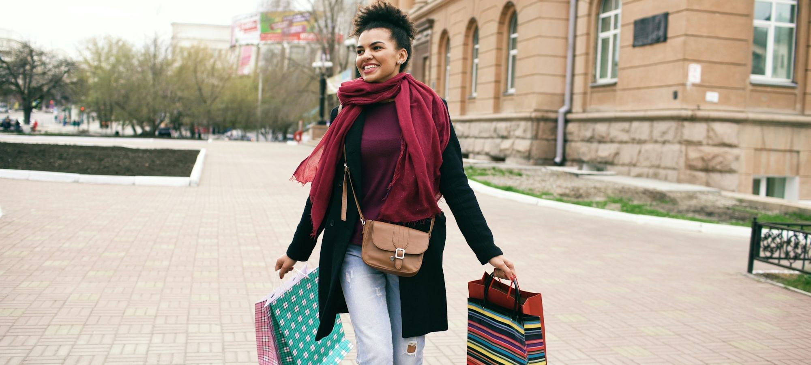

Quel est le meilleur sac cabas pour femme en 2026 ? 10 marques classées
Dix marques, dix cabas phares, cinq critères pondérés et affichés avant le classement.

Toile, cuir, lin ou raphia, du XS au XL. Nous remplissons chaque cabas, nous relevons ses dimensions et ses prix sur le site de la marque, puis nous les classons sur les mêmes critères.

Dix marques, dix cabas phares, cinq critères pondérés et affichés avant le classement.


Dix marques, dix cabas phares, cinq critères pondérés et affichés avant le classement.
Neuf cabas en cuir, de 289 € à 680 €, notés sur cinq critères dont les poids sont affichés avant le classement.
Huit cabas en toile de coton, en nylon, en lin ou en toile enduite, de 125 € à 390 €.
Un ordinateur 14 pouces mesure 31,3 cm de large, un cabas trop juste le refuse à 5 mm près.
Huit maisons françaises, une idée cadeau phare par maison et une trentaine de pièces relevées entre 75 et 450 €.

Douze maisons françaises de maroquinerie comparées sur leur modèle phare, leurs matières, l'origine qu'elles affichent et leur fourchette de prix, de 125 à 890 €.
Note globale sur 10 sur le seul univers cabas, mise à jour le 16 octobre 2026. Matières et tenue dans le temps pèsent 50 % de la note, le prix 20 %. Notes et prix, relevé de démonstration.
Voir la méthode de notation


Comparez deux marques de cabas sur nos cinq critères en un clic.
Sur nos relevés d'octobre 2026, le cabas Vanessa Bruno obtient la meilleure note de l'univers cabas (8,7/10) grâce à sa toile à sequins fabriquée en France et à ses cinq tailles. Longchamp suit à 8,3/10 avec Le Pliage, le meilleur prix d'entrée, et Polène à 8,1/10 sur le cuir.
Une taille M, autour de 29 x 42 x 15 cm, suffit pour un portefeuille, une trousse, une gourde et un pull roulé. Le L s'impose dès qu'il faut glisser un ordinateur ou un dossier A4.
Une toile de coton épaisse et bien cousue tient cinq ans et plus si on la range à plat et qu'on évite de la surcharger. Le premier point d'usure est presque toujours la base des anses, à regarder avant d'acheter.
La toile est plus légère et moins chère, de 130 à 200 € chez les maisons premium. Le cuir coûte deux fois plus mais se patine, se répare et se porte aussi bien au bureau qu'en week-end.
Cinq critères sur 10, matières, tenue dans le temps, praticité, prix et service, pondérés dans une note globale. Prix relevés sur les sites officiels en octobre 2026, relevé de démonstration.
Un email le vendredi, le classement de la semaine, les nouveaux comparatifs et les pièces qui reviennent en stock.
Un email par semaine, désinscription en un clic.